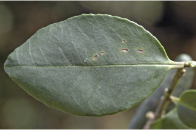
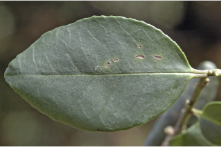
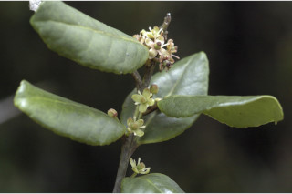
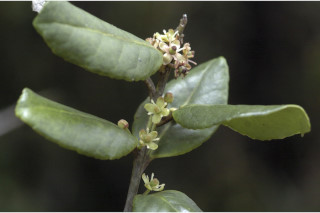

Botanical descriptions:
ಸಸ್ಯದ ವೈಜ್ಞಾನಿಕ ವಿವರ:
Botanical descriptions:
மரங்களின் பண்புகள்:
Habit:
ಪ್ರಕೃತಿ :
Habit:
வளரியல்பு:
Evergreen trees, up to 15 m tall.
15ಮೀ ಎತ್ತರದವರೆಗೆ ಬೆಳೆಯುವ ನಿತ್ಯಹರಿದ್ವರ್ಣ ಮಾದರಿಯ ಮರಗಳು.
15 മീറ്റര് വരെ ഉയരത്തില് വളരുന്ന, നിത്യഹരിത മരങ്ങള്.
பசுமைமாறாமரம் 15 மீ. உயரம் வரை வளரக்கூடியது.
Trunk & Bark:
ಕಾಂಡ ಮತ್ತು ತೊಗಟೆ:
Trunk & Bark:
தண்டு மற்றும் மரப்பட்டை:
Bark smooth, grey; blaze reddish brown.
ತೊಗಟೆ ನಯವಾದ ಮೇಲ್ಮೈ, ಬೂದು ಬಣ್ಣ ಹೊಂದಿದ್ದು ಕಚ್ಚು ಮಾಡಿದ ಸ್ಥಳ ಕೆಂಪು ಮಿಶ್ರಿತ ಕಂದು ಬಣ್ಣದಲ್ಲಿ ರುತ್ತವೆ.
പുറംതൊലി മിനുസമാര്ന്നതും, ചാരനിറത്തിലുള്ളതും; വെട്ട് പാടിന് ചുവപ്പ് കലര്ന്ന തവിട്ട് നിറം.
மரத்தின் பட்டை வழுவழுப்பானது, சாம்பல் நிறமானது; உள்பட்டை சிவப்பு கலந்த அரக்கு (ப்ரவுன்).
Branches and Branchlets:
ಕವಲುಗಳು ಮತ್ತು ಕಿರುಕೊಂಬೆಗಳು:
Branches and Branchlets:
இலைகள்:
Branchlets terete, glabrous, sometimes with purple tinge.
ಕಿರುಕೊಂಬೆಗಳು ಗುಂಡಾಕೃತಿಯನ್ನು ಹೊಂದಿದ್ದು, ರೋಮರಹಿತವಾಗಿರುತ್ತವೆ ಹಾಗೂ ಕೆಲವು ವೇಳೆ ಕೆನ್ನೀಲಿ ಛಾಯೆಯನ್ನು ಹೊಂದಿರುತ್ತದೆ.
ഉപശാഖകള് ഉരുണ്ടതും, അരോമിലവും, ചിലപ്പോള് ഊത നിറത്തോട് കൂടിയതും.
இலைகள் தனித்தவை, மாற்றுஅடுக்கமானவை, சுழல் போன்று அமைந்தவை; இலைக்காம்பு 1-1.3 செ.மீ. நீளமானது, இலைக்காம்பு குறுக்குவெட்டுத் தோற்றத்தில் கேனாலிகுலேட்; இலை அலகு 5-10 X 2.5-3 செ.மீ., நீள்வட்டம் அல்லது நீள்சதுர வடிவானது, அலகின் நுனி கூரியது, அலகின் தளம் மழுங்கியது அல்லது ஆப்பு வடிவம், அலகின் விளிம்பு முழுமையானது, கோரியேசியஸ்; மையநரம்பு அலகின் பரப்பைவிட பள்ளமானது; இரண்டாம் நிலை நரம்புகள் 6-9 ஜோடிகள்; மூன்றாம் நிலை நரம்புகள் தெளிவற்றது.
Leaves:
ಜಿನುಗು ದ್ರವ:
Leaves:
மஞ்சரி / மலர்கள்:
Leaves simple, alternate, spiral; petioles 1-1.3 cm long, canaliculate; lamina 5-10 x 2.5-3 cm, elliptic or oblong, apex acute, base rounded and cuneate, margin serrate, coriaceous; midrib canaliculate; secondary_nerves 6-9 pairs; tertiary_nerves obscure.
ഇലകള് ലഘുവും, ഏകാന്തരക്രമത്തില്, വര്ത്തുളമായി അടുക്കിയിരിക്കുന്നു; ഇലഞെട്ടിന് 1 മുതല് 1.3 സെ.മി വരെ നീളമുള്ളതും ചാലോടുകൂടയതുമാണ്; പത്രഫലകത്തിന് 5 മുതല് 10 സെ.മി. വരെ നീളവും 2.5 മുതല് 3 സെ.മി വരെ വീതിയും, ദീര്ഘവൃത്താകാരമോ ആയതാകാരമോ ആണ്, പത്രാഗ്രം നിശിതവും, പത്രാധാരം വൃത്താകാരമോ ആപ്പാകൃതിയിലോ ആണ്, പത്രസീമാന്തം ദന്തുരമാണ്, ചര്മ്മില പ്രകൃതം; മുഖ്യസിര ചാലോട്കൂടിതാണ്; ദ്വിതീയ ഞരമ്പുകള് 6 മുതല് 9 വരെ ജോഡികള്; ത്രിതീയ ഞരമ്പുകള് അസ്പഷ്ടമാണ്.
மலர்கள் ஒர்பாலானவை, ஈரகம் கொண்டவை; ஆண்மலர்கள் சிறிய மஞ்சரி காம்புடைய சைம், காம்பற்றவை அல்லது சிறிய காம்புடையது, செழுமையற்ற சூலகம் கொண்டது; பெண்மலர்கள் இலைக்கோணங்களில் தொகுப்பாக காணப்படுபவை, செழுமையற்ற மகரந்ததாள்களுடையது.
Inflorescence / Flower:
ಎಲೆಗಳು:
Inflorescence / Flower:
கனி / விதை:
Flowers unisexual, dioecious; male flowers in short pedunculate cymes, sessile or subsessile, pistilode present; female flowers in axillary fascicles, staminodes present.
ಎಲೆಗಳು ಸರಳವಾಗಿದ್ದು, ಪರ್ಯಾಯ ಹಾಗೂ ಸುತ್ತು ಜೋಡನಾ ವ್ಯವಸ್ಥೆಯಲ್ಲಿರುತ್ತವೆ. ಎಲೆತೊಟ್ಟುಗಳು 1 ರಿಂದ 1.3 ಸೆಂ.ಮೀ. ಉದ್ದವಿದ್ದು ಕಾಲುವೆ ಗೆರೆಗಳನ್ನು ಹೊಂದಿರುತ್ತವೆ. ಎಲೆಪತ್ರ 5 ರಿಂದ 10ಸೆಂ.ಮೀ. ಉದ್ದ ಹಾಗೂ 2.5 ರಿಂದ 3ಸೆಂ.ಮೀ. ಅಗಲ ಹೊಂದಿದ್ದು, ಅಂಡವೃತ್ತ ಅಥವಾ ಚತುರಸ್ರಾಕಾರದಲ್ಲಿದ್ದು ಚೂಪಾದ ತುದಿ, ಗುಂಡಾದ ಮತ್ತು ಬೆಣೆಯಾಕಾರದ ಬುಡ, ಗರಗಸದಂತಿತವಾದ ಅಂಚು, ತೊಗಲನ್ನೋಲುವ ಮೇಲ್ಮೈಯನ್ನು ಹೊಂದಿರುತ್ತದೆ. ಮಧ್ಯನಾಳ ಕಾಲುವೆಗೆರೆ ಸಮೇತವಿರುತ್ತದೆ. ಎರಡನೇ ದರ್ಜೆಯ ನಾಳಗಳು 6 ರಿಂದ 9 ಜೋಡಿಗಳಿದ್ದು ತೃತೀಯ ದರ್ಜೆಯ ನಾಳಗಳು ಅಸ್ಪಷ್ಟವಾಗಿರುತ್ತವೆ.
പൂക്കള് ഏകലിംഗികളാണ്, ഡയീഷ്യസാണ്; ആണ്പൂക്കള് ചെറുഞെട്ടോടുകൂടിയ സൈമുകളില് ഉണ്ടാകുന്നു, അവൃന്തമോ, ഉപഅവൃന്തമോ ആണ്, പിസ്റ്റിലോഡ് ഉണ്ട്; പെണ് പൂക്കള് കക്ഷങ്ങളില് കൂട്ടമായുണ്ടാകുന്നു, സ്റ്റാമിനോഡുകള് ഉണ്ട്.
உள்ளோட்டுத்தசைகனி (ட்ரூப்), கோளவடிவானது, சிவப்பு முதல் பர்புள் நிறமானது; 4 அறைகளுடையது, ஒவ்வொரு அறையிலும் 1 விதை காணப்படும்.
Fruit and Seed:
ಪುಷ್ಪಮಂಜರಿ/ಹೂಗಳು:
Fruit and Seed:
:
Drupe, globose, red to purple; locule 4, each 1-seeded.
ಹೂಗಳು ಏಕಲಿಂಗಿಗಳಾಗಿದ್ದು ಒಂದೇ ಸಸ್ಯದಲ್ಲಿ ಉಭಯಲಿಂಗಿಗಳಾಗಿ ಕಾಣಿಸಿ ಕೊಳ್ಳುವಂತಹವು; ಪುಲ್ಲಿಂಗ ಹೂಗಳು ಕಿರಿದಾದ ಪುಷ್ಪವೃಂತ ಹೊಂದಿದ ಮಧ್ಯಾರಂಭಿ ಪುಷ್ಪಮಂಜರಿಯಲ್ಲಿರುತ್ತವೆ ಹಾಗೂ ತೊಟ್ಟು ರಹಿತ ಅಥವಾ ಉಪ ತೊಟ್ಟು ಸಹಿತವಾಗಿರುತ್ತವೆ ಮತ್ತು ಬಂಜೆ ಅಂಡಾಶಯ ಮಂಡಲ ಸಮೇತವಾಗಿರುತ್ತವೆ. ಸ್ತ್ರೀಲಿಂಗ ಹೂಗಳು ಅಕ್ಷಾಕಂಕುಳಿನಲ್ಲಿ ಗುಜ್ಜಾಕಾರವಾಗಿರುತ್ತವೆ. ಹಾಗೂ ಬಂಜೆಕೇಸರಗಳ ಸಮೇತವಾಗಿರುತ್ತವೆ.
അഭ്രകം ഗോളാകൃതിയിലുള്ളതും, ചുവപ്പോ ഊതനിറമുള്ളതെ ആണ്; ഓരോ വിത്തോടുകൂടിയ നാല് അരകളാണുള്ളത്.
Literatures:
ಗ್ರಂಥ ಸೂಚಿ:
Literatures:
சான்று ஏடு:
Wight, Illust.2: t. 142. 1850; Gamble, Fl. Madras 1: 200. 1997 (re. ed); Sasidharan, Biodiversity documentation for Kerala- Flowering Plants, part 6: 94. 2004; Saldanha, Fl. Karnataka 2: 102. 1996.
Wight, Illust.2: t. 142. 1850; Gamble, Fl. Madras 1: 200.1997 (re.ed); Sasidharan, Biodiversity documentation for Kerala- Flowering Plants, part 6: 94. 2004; Saldanha, Fl. Karnataka 2: 102. 1996.
Wight, Illust.2: t. 142. 1850; Gamble, Fl. Madras 1: 200. 1997 (re. ed); Sasidharan, Biodiversity documentation for Kerala- Flowering Plants, part 6: 94. 2004; Saldanha, Fl. Karnataka 2: 102. 1996.
Wight, Illust.2: t. 142. 1850; Gamble, Fl. Madras 1: 200. 1997 (re. ed); Sasidharan, Biodiversity documentation for Kerala- Flowering Plants, part 6: 94. 2004; Saldanha, Fl. Karnataka 2: 102. 1996.


 



 
